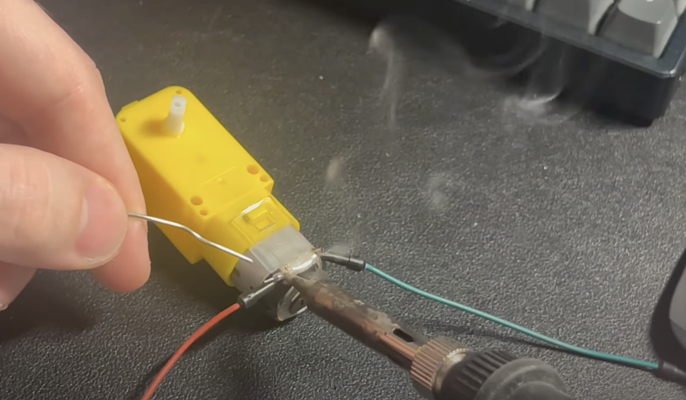

Object Avoiding Smart Bot
Welcome to my latest project, the Object Avoiding Smart Bot! This robot car uses a Raspberry Pi Pico W to navigate around obstacles. Let’s dive into the main parts, tools used, assembly, programming, main logic, adjustments, testing, and future plans.
Main Parts

- Power Supply: I used a variable and portable DC power supply. MEGO Power Supply.
- Motor Driver: Controls the direction and speed of the DC motors.
- DC Motors: 2 DC motors with the tires mounted on them.
- Servo Motors: Mounted with an ultrasonic sensor on top to measure distances in different directions.
- Raspberry Pi Pico W: The brains of this robot car.
- Tires: Mounted on the chassis.
Tools Used
- 3D Printer: To print the chassis.
- Soldering Iron: For making connections.
- Hot Glue Gun: To attach components to the chassis.
- Breadboard and Jumper Wires: For connecting all the parts.
Assembly
1. Soldering: Start by soldering the power and ground wires to the DC motors. The terminal connections can be adjusted later.

2. Hooking Up: Connect everything to the motor driver. Test an algorithm to ensure the motors run correctly.
3. Adding the Sensor: Attach the ultrasonic sensor to measure distances and stop the motors when obstacles are detected.

4. 3D Printing: Print the chassis and start moving all parts onto it.
5. Connecting Components: Run wires to the motor driver through the chassis hole. Test connections using the mega power supply and alligator clips.
6. Breadboard Setup: Move wire connections to a smaller breadboard for easier handling.
7. Final Touches: Glue on the rear swivel tire and attach the servo motor. Connect the servo motor to the Raspberry Pi with jumper wires.
Programming
I opted for a modular design, where each hardware component has its own Python file:
- DC Motors
- Servo Motor
- Ultrasonic Sensor
These files handle the declaration, setup, and operation functions for each component. The main logic resides in main.py.
Main Logic
1. Imports: Import libraries from the component files.
2. Initialization: Initialize components.
3. Scan Directions Function: Measure distances straight ahead, left, and right, then save these values.
4. Decision Making: Compare measurements. Prioritize going straight if the path is clear; otherwise, choose the optimal direction (left or right).

5. Navigate Loop: Continuously measure forward distance. If below threshold, use the optimal direction function to navigate.
To look at the full detailed code, the Github link is at the end of this post!
Testing and Future Plans
Testing the robot in my bedroom with obstacles, it navigated correctly, prioritizing forward movement.
Future plans include building off the same platform with the addition of machine learning and adding functionality like a vacuum!